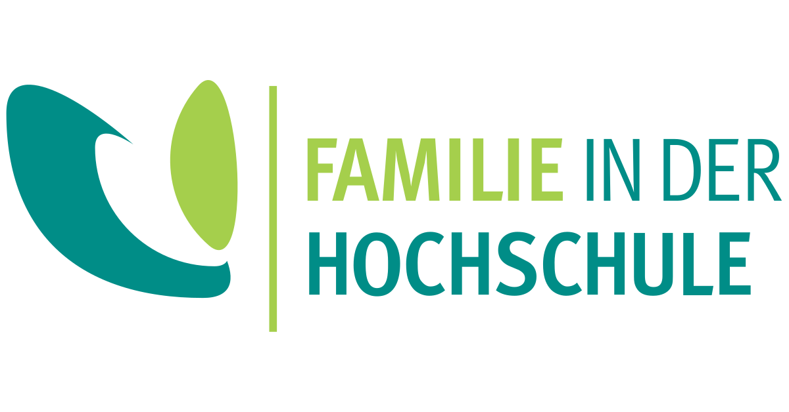

Job opportunity

The Department of Psychology at the University of
Göttingen, Germany, invites applications for a
Postdoctoral Research Position in Cognitive Science (m/f/d)
with TV-L E13, 100% for 3 years.
Official website of the job advertisement here.
The position
The position is linked to a five-year project on the topic “Mechanisms, Capacities, and Dependencies: A New Theory of Causal Reasoning”, led by Michael R. Waldmann, funded by the German Research Foundation (Koselleck program). The goal of the project is the development of a novel theory of causal cognition, integrating insights from Pearl’s hierarchical causal inference theory with new theories of mechanisms developed in philosophy of science (New Mechanism view). The goal of the project is to develop a new psychological theory that explains everyday causal cognition. The theory will be experimentally tested by investigating different causal models, mechanisms, and tasks in various content domains and populations (adults, children, non-human primates). Additionally, computational models of the theory will be developed and the role of mechanisms in psychological research will be analyzed. The project will bring together an interdisciplinary group of researchers from different fields of cognitive science, including cognitive, developmental, and experimental psychology, computer science, computational modelling, AI, and philosophy of science.
Requirements
A PhD degree in Psychology, Cognitive Science, Artificial Intelligence, Computer Science, Philosophy, or a related field is required.
In the first round of hiring, candidates who have an interest in developing new computational models of causal cognition are especially encouraged to apply. But candidates with other skills, who are interested in causal cognition, should also contact us. The group will be located at the University of Göttingen but German language skills are not required.
The University of Göttingen is an equal opportunities employer and places particular emphasis on fostering career opportunities for women. Qualified women are therefore strongly encouraged to apply in fields in which they are underrepresented. The university has committed itself to being a family-friendly institution and supports their employees in balancing work and family life. The mission of the University is to employ a greater number of severely disabled persons. Applications from severely disabled persons with equivalent qualifications will be given preference.
Application
The position (TV-L E 13, 100%) is available from November 2022 but the start date is flexible. Candidates should apply electronically to michael.waldmann@bio.uni-goettingen.de (subject: post-doc) by 02.08.2022. Please submit a cover letter explaining your motivation and fit, a CV, one or two samples of written work, and contact information of three potential referees for letters of recommendation. Please contact us also if you are interested in a later start date as the project is funded for five years.
Please note:
With the submission of your application, you accept the processing of your applicant data in terms of data protection law. Further information on the legal basis and data usage is provided in the Information General Data Protection Regulation (GDPR) https://www.uni-goettingen.de/hinweisdsgvo
